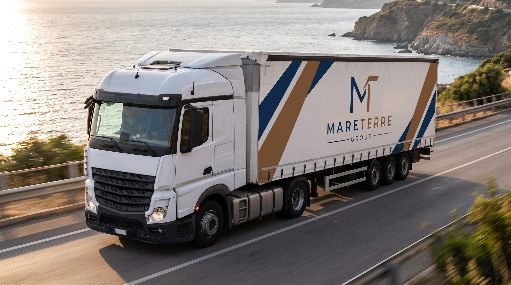
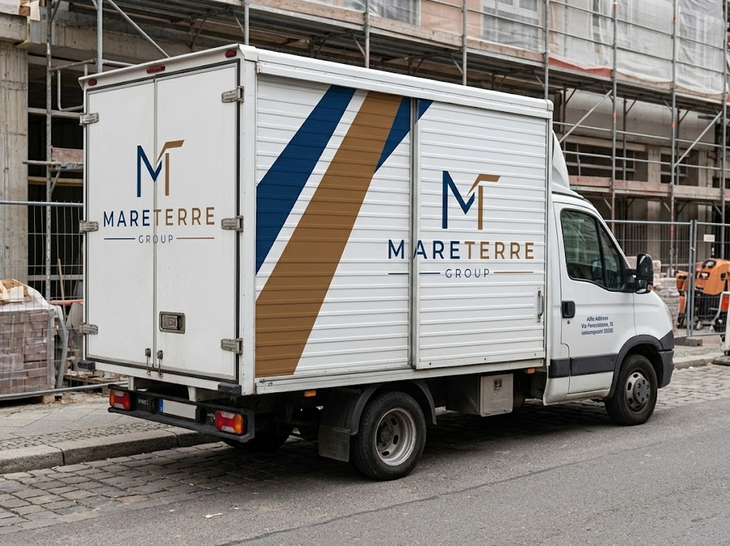
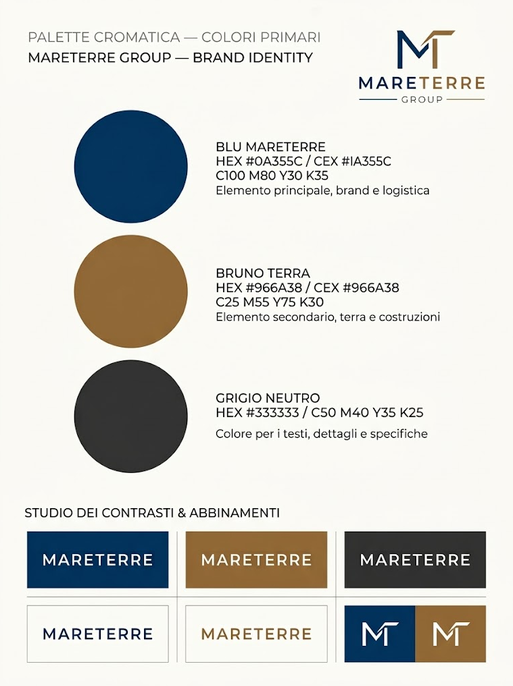
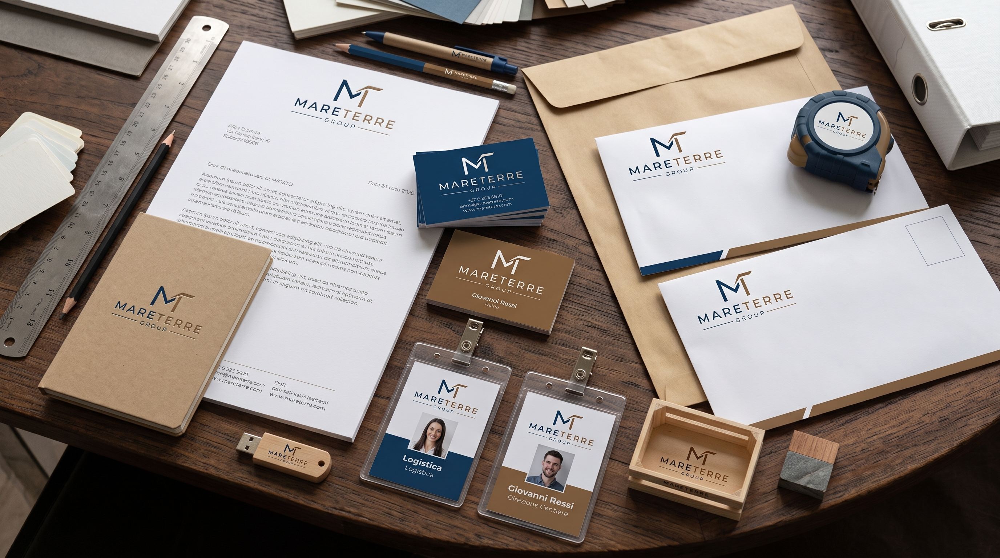
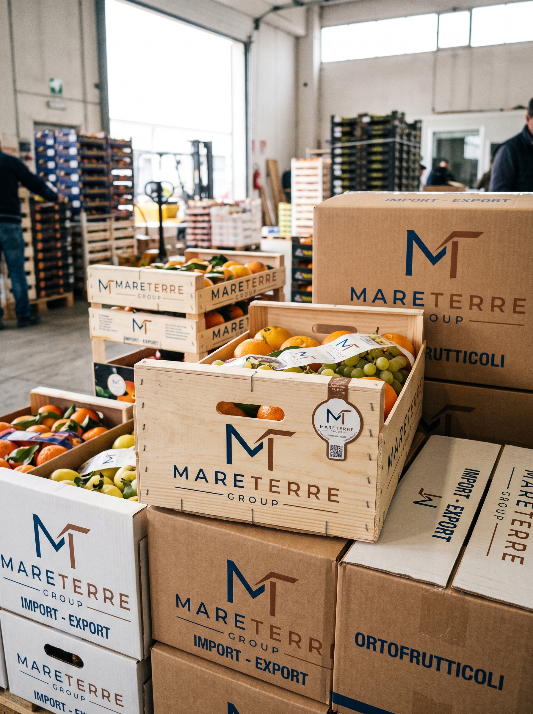
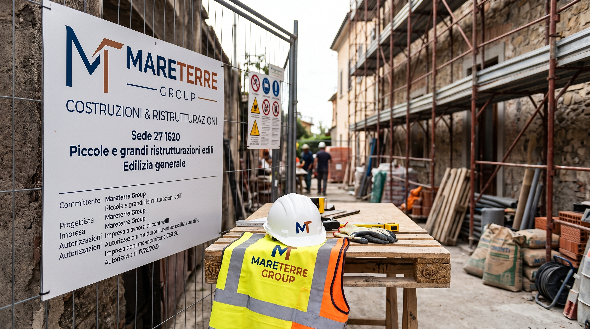

MARETERRE GROUP
Un’identità visiva solida e autorevole per una realtà aziendale polivalente, attiva sia nell'import-export ortofrutticolo su scala internazionale che nella ristrutturazione edilizia. Un monogramma geometrico capace di fondere gli elementi primari di terra e mare in un linguaggio corporate pulito, modulare e pronto per grandi formati.

Un marchio per due settori
Costruire un'unica identità corporate B2B per una realtà aziendale attiva su due fronti molto diversi: l'import-export ortofrutticolo internazionale e la ristrutturazione edilizia.
Unire logistica ed edilizia
Far convivere sotto un solo cappello visivo la freschezza del commercio agroalimentare e la solidità del cantiere senza generare confusione, garantendo una resa impeccabile anche su mezzi pesanti e grandi formati.
Geometria e codice bicolore
Un monogramma «MT» netto e strutturato che fonde il Blu Oltremare (mare e rotte logistiche) con il Bruno Terra (suolo e costruzioni), applicato con forte impatto su camion frigo, cartelli di cantiere e imballaggi.


«Due mondi, un'unica direzione: la solidità materica del costruire incontra la freschezza e il dinamismo delle rotte commerciali ortofrutticole.»


